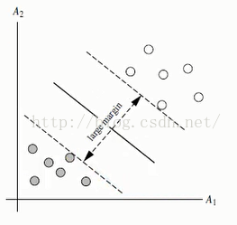
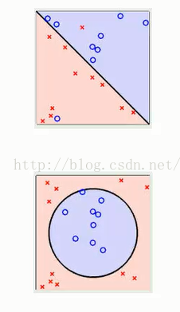
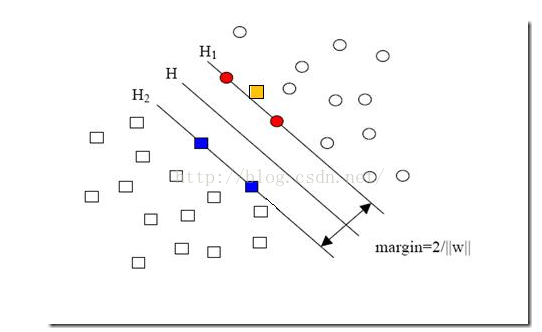
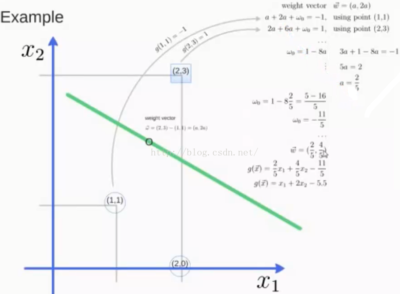

支持向量机是一个用于二分类的非线性分类器
一：我对SVM的理解
先介绍一些简单的基本概念
分隔超平面：将数据集分割开来的直线叫做分隔超平面。
超平面：如果数据集是N维的，那么就需要N-1维的某对象来对数据进行分割。该对象叫做超平面，也就是分类的决策边界。
间隔：
一个点到分割面的距离，称为点相对于分割面的距离。
数据集中所有的点到分割面的最小间隔的2倍，称为分类器或数据集的间隔。
最大间隔：SVM分类器是要找最大的数据集间隔。
支持向量：坐落在数据边际的两边超平面上的点被称为支持向量
对于上图直观的理解是红线的分类效果最好，为什么？ 由此便引出了超平面的定义，SVM的目标就是寻找区分两类的超平面（hyper plane），使边际（margin）最大化。 那么如何选择超平面？超平面到一侧最近点的距离等于另一侧最近点的距离，两个超平面平行，如下图。
上面显示的两个图都是线性可区分的，就是说很容易找到一个超平面将数据分割成两类
上图中的两个图形都是线性不可区分的，这种情况下，我们就需要用到核函数，将数据映射到高维空间中，寻找可区分数据的超平面
对于这幅图来说， 就是图中黄色那个点，它是方形的，因而它是负类的一个样本，这单独的一个样本，使得原本线性可分的问题变成了线性不可分的。这样类似的问题（仅有少数点线性不可分）叫做“近似线性可分”的问题。对于这类问题的处理就引入了一个松弛变量，当然随之而来的便是惩罚因子了，具体他们是什么请参考：点击阅读 ， 这里不做解释
超平面的公式可以定义为 ： W * X + b = 0 W表示权重向量 W= {w1,w2,w3,w4.....,wn},n为特征值的个数 ， X为训练实例， b表示偏移量
在这里假设二维特征向量X=（x1，x2）
做另外一个假设就是把b看作是另外一个weight，那么超平面就可以更新为： w0 + w1 * x1 +w2 * x2 = 0
所有超平面右上方的点满足： w0 + w1 * x1 +w2 * x2 > 0
所有超平面左下方的点满足： w0 + w1 * x1 +w2 * x2 < 0
调整weight，使超平面定义边际的两边：
H1：H1：w0 + w1 * x1 +w2 * x2 > 1 for yi=+1
H2：w0 + w1 * x1 +w2 * x2 =< -1 for yi=-1
综合上边两个公式得到：
(1): yi ( w0 + w1 * x1 +w2 * x2 ) >= 1 ,对于所有的i来说
所有坐落在数据边际的两边超平面上的点被称为支持向量
分界的超平面H1和H2任意一点的距离为 1/||W|| （推导过程这里略过，推导参考博客） ， ||W||表示向量的范数
W= sqrt（W1^2 + W2^2 + ... + Wn^2）
所以两边最大距离为 2/||W||
利用一些数学公式的推导，以上公式(1)可以变为有限制的凸优化问题，利用KKT条件和拉格朗日公式，可以推出MMH（最大超平面）表示为以下决策边界：
yi是支持向量点Xi的类别标记 X^T是要测试的实例 ai和b0都是单一数值型参数 l是支持向量点的个数 下面看一张示例图片:
特性：训练好的模型算法复杂度是由支持向量的个数决定的，而不是 数据的纬度决定的，所以SVM不太容易产生OverWriting
SVM训练出的模型完全依赖于支持向量，即使所有训练集里所有非支持向量的点都被去除，重复训练过程，结果仍会得到一个完全一模一样的模型
一个SVM如果训练得出的支持向量个数比较小，SVM训练出的模型也容易被泛化